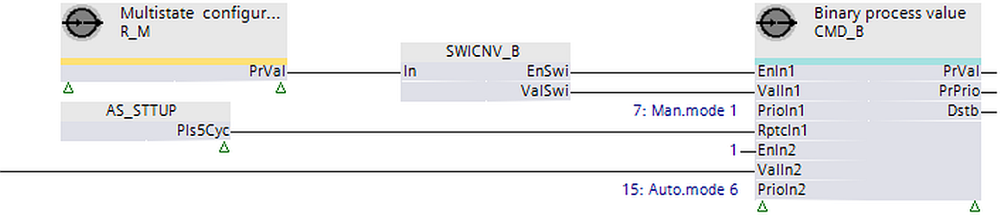

[CMD_B] 命令二进制
功能块 CMD_B 以单个数据点的特定优先级命令属性“当前值”（或释放该优先级）。
CMD_B 以单个数据点的特定优先级命令属性“当前值”（或释放此优先级）。 CMD_B 读取传输的当前值和“当前优先级”属性，以检查这些值是否已更改以及是否需要新的命令。
Compatible data points:
- Binary output [BO]
- Binary process value [BPrcVal]
- Third-party objects that include the requested properties and support the priority mechanism.
Required properties:
- Present value
- Status flag
- Priority array
- Present priority
Optional properties:
- Reliability
- Extension by event configuration
- Event state
- Acknowledged transitions
- Feedback value
- Extension by data aggregation
- Maintenance state
- Operating hours
- Suppress event notification
- Suppress event detection
- Enable aggregation
Operate with priorities
该功能块使用 2 种方法来控制是否按优先级运行：
1. 独占控制（计划优先级1..5、9..12、14..16）
- Only one command source is permitted for a data point priority.
- A function block on a project can command this priority.
- An input set of a function block can command this priority.
- The function block commands the priority anew or releases it if a priority is used from a function block and another commanding source changes this priority.
2. 最后胜利控制（计划优先级7、8、13）
- Multiple, command sources can use the same priority.
- The last commanded value (release) remains on the priority until a new command is performed by one of the commanding sources.
| 专属控制 | 最后获胜控制权 |
|---|---|---|
工厂启动时的行为 | [EnIn1] = 0 | [EnIn1] = 0 |
[EnIn1] = 1 | [EnIn1] = 1 | |
命令流程 | 如果[EnIn1]从0变为1。 | 如果[EnIn1]从0变为1。 |
如果 [EnIn1] = 1 并且 [ValIn1] 发生变化。 | 如果 [EnIn1] = 1 并且 [ValIn1] 发生变化。 | |
如果 [EnIn1] = 1 且 [RptcIn1] = 1。 | 如果 [EnIn1] = 1 且 [RptcIn1] = 1。 | |
发布 | 如果[EnIn1]从1变为0。 | 如果[EnIn1]从1变为0。 |
如果 [EnIn1] = 0 且 [RptcIn1] = 1。 | 如果 [EnIn1] = 0 且 [RptcIn1] = 1。 | |
来自其他来源的命令时的行为 | [EnIn1] = 0 | [EnIn1] = 0 |
[EnIn1] = 1 | [EnIn1] = 1 |
数据点定期将优先级 8 的值保存到控制器内存中。断电后，该值将在属性“优先级数组”中恢复，并由数据点进行评估。所有其他优先级不会保存到控制器内存中。
功能块的其他输入组（[EnIn2]...[EnIn4]、[ValIn2]...[ValIn4]、[RptcIn2]...[RptcIn4]）的操作相同。
输入 | 描述 | 数据类型 | 默认值 |
|---|---|---|---|
EnIn1…EnIn4 | Enable input 1…Enable input 4 [EnIn1] 确定是否以[PrioIn1] 的优先级命令[ValIn1]，或者释放优先级。 | 布尔值 | 0 |
0 - 如果当前未激活，则通过将另一个 [EnInX] 设置为 1 来释放 [PrioIn1] 的优先级。 | |||
ValIn1…ValIn4 | Value input 1…Value input 4 [PrioIn1] 处的命令值。 | 布尔值 | 0 |
PrioIn1…PrioIn4 | Priority input 1…Priority input 4 | 整数 | 17 |
[PrioIn1] 属于 4 个输入集之一，并接收 [ValIn1] 附带的优先级。 Exclusive control: 在启动期间，功能块可以使用独占控制来初始化范围 1...5、9...12 和 14...16 中分配的优先级。 在运行期间，功能块保留独占控制。如果发出外部重写信号，功能块可以按照 [PrioIn1] 的优先级重新发出命令或释放信号。 同一功能块上的两个或多个输入集不能具有共同的、独占的控制优先级，因为这将导致冲突。 Last wins: 启动期间不初始化优先级。 在运行时，最后一个有效命令控制优先级。 如果 2 个或更多输入集具有相同的优先级并且同时发出命令，则仅执行具有第一个数字顺序的输入集 (In1...In4)。 Prio 6: Prio 8: | |||
RptcIn1…RptcIn4 | Repeat command input 1…Repeat command input 4 [RptcIn1] 重复命令或释放优先级。 | 布尔值 | 0 |
EnInFb | Enable feedback input 启用反馈输入的值输入功能。 | 布尔值 | 0 |
ValInFb | Value feedback input 允许在 BACnet 对象上提供反馈值。 [ValInFb] 中的值是为属性“反馈值”写入的。 | 布尔值 | 0 |
|
SupEvtDet | Suppress event detection 抑制事件的检测。 | 布尔值 | 0 |
SupEvtNtf | Suppress event notification 抑制事件通知。 | 布尔值 | 0 |
EnDataAgn | Enable data aggregation 允许激活或停用数据聚合。 | 布尔值 | 0 |
|
BaObjRef | BA-Object reference | 结构 | --- |
BaObjRef | Device identifier | 双字 | 16#3FFFFF |
BaObjRef | Object identifier | 双字 | 16#3FFFFF |
BaObjRef | Item identifier | 整数 | -1 |
输出 | 描述 | 数据类型 | 默认值 |
|---|---|---|---|
PrVal | Present value 引用的 BACnet 对象的属性“当前值”的值。 [PrVal] 在发生故障时提供最后的有效值。 | 布尔值 | 0 |
PrPrio | Present priority 所引用的 BACnet 对象的活动优先级。 [PrPrio] 设置为：
| 整数 | Default |
Overridden | |||
Dstb | Disturbed [Dstb] 指示引用的 BACnet 对象是否处于故障状态或处于 OffNormal 状态。当 BACnet 对象返回正常状态时，[Dstb] 保留其值，直到确认转换到正常状态为止。 [Dstb] = 0，如果上述条件不满足 AND '确认的转换' = x, x, 1。 Note | 布尔值 | 0 |
Flty | Faulty [Flty] 指示引用的 BACnet 对象上的最后一个事件是否有错误。如果 BACnet 对象返回到正常状态，[Flty] 将保留其值，直到确认转换到正常状态为止。 [Flty] = 0，如果不满足上述条件 AND 以下可能性之一有效：
Note | 布尔值 | 0 |
OffNrml | Offnormal [OffNrml] 指示引用 BACnet 对象上的最后一个事件是否异常。当 BACnet 对象返回正常状态时，[OffNrml] 保留其值，直到确认转换到正常为止。 [OffNml] = 0，如果上述条件未满足 OR '事件状态' = 正常 AND '已确认的转换' = x, x, 1。 Note | 布尔值 | 0 |
Rlb | Reliability | 整数 | 0：未检测到故障 |
Oph | Operating hours 显示引用的 BACnet 对象的属性运行时间值 | 双字 | 0 |
MntnSta | Maintenance state 为引用的 BACnet 对象提供属性“维护状态”的值。 | 整数 | 1 |
1: None Note | |||
ErrCode | Error code indication | 整数 | 0: No error |
= 0 - No error | |||
启动后不会写入手动优先级的值。使用以下编程逻辑来写入启动后的手动优先级：
